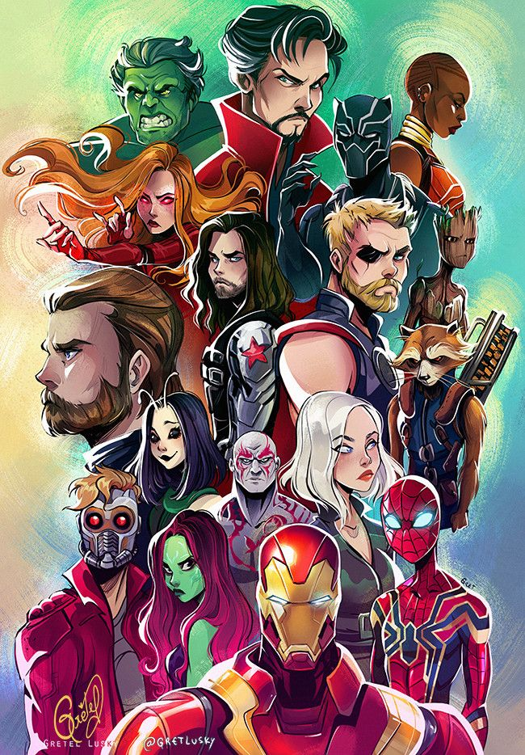
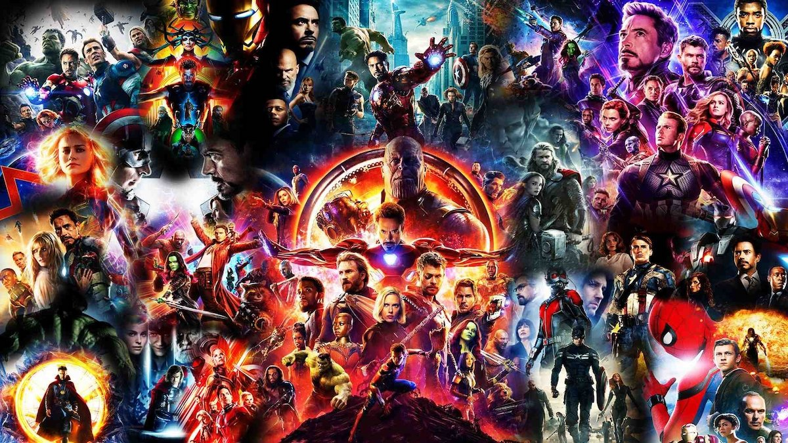

L'histoire de Marvel débute dans les années 1930 comme éditeur et reste sur ce cœur
de métier
jusqu'en 1990 quand Ronald Perelman diversifie la société. Depuis 2009, Marvel est devenu une filiale
de la Walt Disney Company, qui distribue dès lors les productions de l'Univers cinématographique Marvel
au succès international. L'univers cinématographique Marvel est une franchise cinématographique produite
par Marvel Studios mettant en scène des personnages de bandes dessinées, imaginée et mise en route par
Kevin Feige à partir de 2008. Marvel possède un catalogue de plus de 5 000 personnages, nombre d'entre
eux
étant nés de l'imagination du scénariste Stan Lee et du dessinateur Jack Kirby. Marvel Studios est la
propriété de The Walt Disney Company depuis 2009.

Les films qui font partie de cet univers partagé sont, à l'origine, ceux mettant en vedette Les Avengers, un groupe de super-héros comprenant Iron Man, Hulk, Thor, Black Widow, Hawkeye et Captain America. La première phase de cet univers est lancée avec la sorti du film Iron Man, en 2008. Cette phase se terminera en 2012 avec la sortie d'Avengers. La seconde phase est initiée par la sortie de Iron Man 3 en 2013 et s'est conclue avec Ant-Man en 2015. La troisième phase, quant à elle, a débuté lors de la sortie de Captain America : Civil War en 2016, et s'est achevée en 2019 avec la sortie de Spider-Man: Far From Home. Les trois premières phases de cet univers forment un arc narratif connu sous le nom de The Infinity Saga. Enfin, la quatrième phase a débuté en 2021 avec la diffusion de la série WandaVision sur Disney+.
La création d'un univers filmique s'apparente à ce que proposait Stan Lee dans les comics, où les personnages peuvent apparaître dans d'autres séries que la leur. Avec le concept d'univers étendu, les productions cinématographiques Marvel ont mis en scène, sous la direction du producteur Kevin Feige, une vaste galerie de personnages et participé à rendre davantage populaire le genre de films de super-héros.
